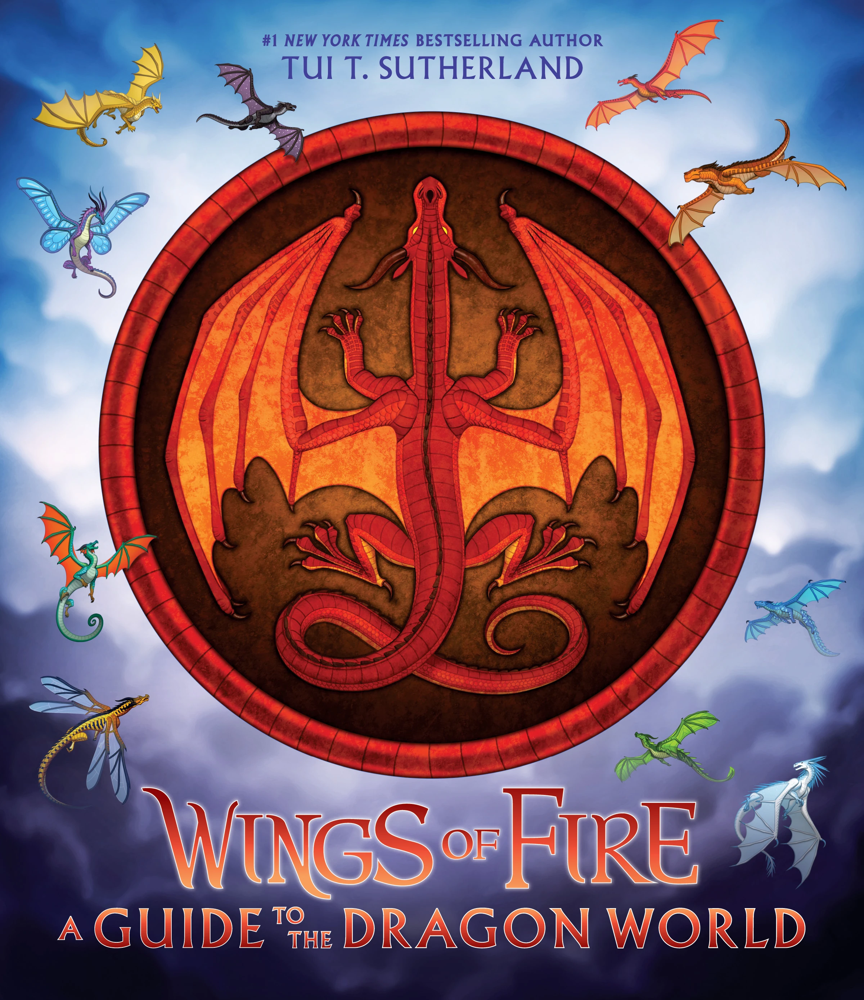
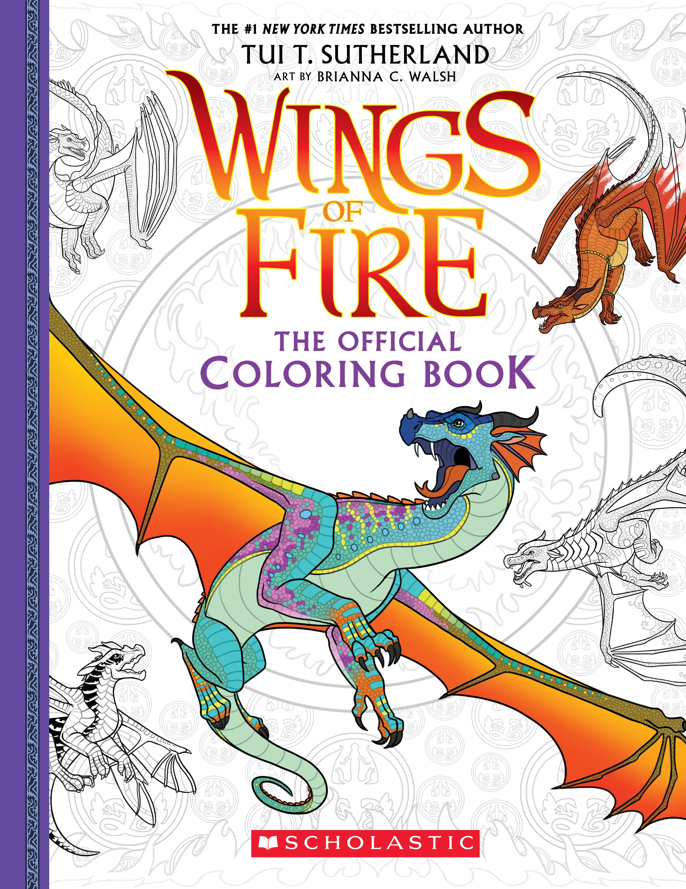
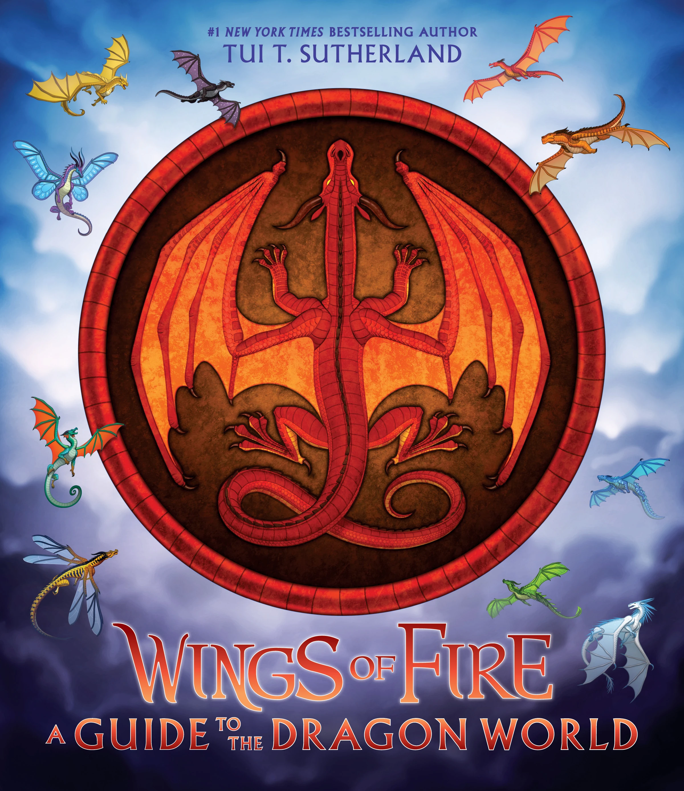
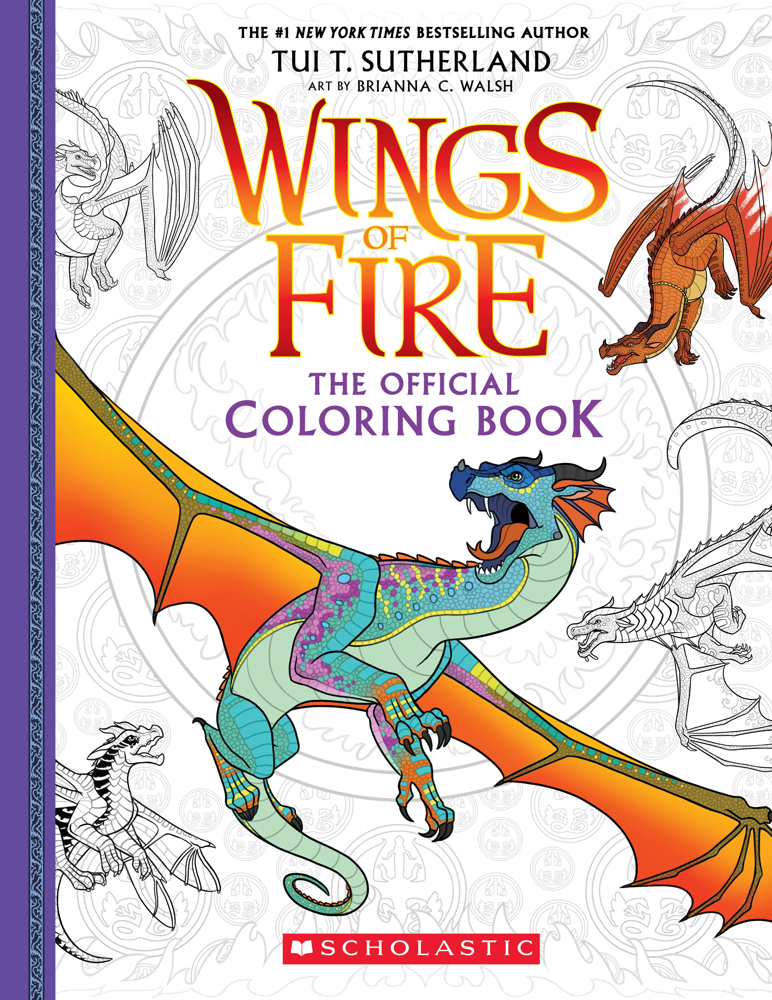

Wings of Fire is a series of epic dragon fantasy novels written by author
Tui T. Sutherland and published by Scholastic.
Over 14 million copies of the books have been sold and it has been on the
New York Times Best Seller list for more than 210 weeks.
It has also
been translated into at least ten languages.

What age are the Wings of Fire books appropriate for? The series is
certainly one for lovers of action, adventure and fantasy.
I would suggest they will be most enjoyable for reasonably confident readers
from 10 years of age, possibly 9 years if you child is okay with violence
and other sensitive content
The first arc focuses on the “Dragonet Prophecy”, which foretells that a
dragonet from the MudWing, SkyWing,
SeaWing, NightWing, and SandWing tribe will stop the twenty-year war between
the SandWing princesses.
The second arc is mainly about the Jade Mountain prophecy, given by
Moonwatcher at the end of Moon Rising and the
beginning of Winter Turning, predicting the destruction of Jade Mountain
unless the lost city of night could be found.
It is said to be the first true NightWing prophecy in generations.
The third arc introduces us to three more dragon tribes and a new continent
where the hivewings
are considered as supirior to the silk and leafwings. The Lost Continent
prophecy (given by Moonwatcher)
gives the dragons very cryptic clues
on how to defeat a mind-controling hivewing Queen.
This story is set two thousand years before the Dragonet Prophecy, where
Darkstalker, half NightWing and half IceWing, is hatched under the three
moons.
Born into a divided heritage, he is destined to become the most
powerful and dangerous dragon Pyrhhia will ever know, and it will take the
combined efforts of a
SeaWing named Fathom and a NightWing seer named Clearsight to come up with a
way to save all the kingdoms from his wrath.
This is the first WoF book that is written from a scavenger/human point of
veiw. Wren doesn't trust humans.
She swore them off after her village tried to sacrifice her to the dragons.
She only has one friend, a small, wonderful mountain dragon named Sky.
Leaf,
her brother, hates dragons since he was told that they had eaten his younger
sister and now he'll do whatever it takes to slay even one.
Ivy doesn't trust the Dragonslayer. He may be her father and the beloved
lord of Valor, but
she knows he's hiding something more than the
treasure from the sand dragon he supposedly killed two decades ago.
This book consists of smaller stories of the side characters. The first book
takes place shortly after the events of
the 'Brightest Night' where Firceteeth, a NightWing stuck in the SandWing
prison, tells her life story in alternating letters
to the SandWing guard, Saguaro. The second story features Deathbringer, the
great Nightwing assassin, as
a young dragonet on his first mission. The third story, set before
the Dragonet Prophecy, shows how Six-Claws, one of Thorn's Outclaws, finds
out that loyalty comes with a price. The last book
shows us the true story of Artic and Foeslayer, that wheather the NightWings
kidnaped the IceWing prince or he had come willingly.
There is also a WoF colouring book full of wonderful illistrations, a guide
to the all the dragons in
both pantala and pyrrhia and an activity book filled with fun things to do.
 




Tui Tamara Sutherland is an American children's book author who has written
more than 50 books under her
own name and under several pen names. She was named after the Tui bird in
New Zealand. Tui received an education at Williams College and then
moved to New Jersey. She currently resides in Boston, Massachusetts with
her husband, Adam, her sons, Jonah and Elliot, and her dog, Sunshine.